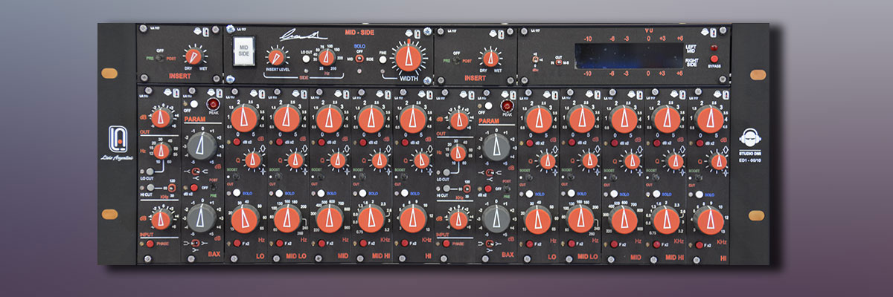

Inside of LA-117 there are two different equalizers:
- the first section is a Baxandall type
- the second section is a special 5 band parametric unit
The interaction of these different equalizers submit the LA-117 for any range of acoustic correction.
The extreme large bandwidth granted an extreme transient response and an extreme natural sound unique in the market. The very simple ( instrumental type ) electronic balanced amplifier, without transformers and servoamplifier, allows a perfect square wave response and absolutely not colored sound. The insertion of a MIS-SIDE matrix ( suggest by Luca Pretolesi), and the external insert capability, tranform the LA-117 in a complex audio Hub. The special modular construction allows an extreme quick servicing and an easy customization.
LA-117 frontview
LA-117 backview
LA-117 General
| Input (EQ / Insert) | Electronically balanced - Impedance 10 Kohm - Normal Level +4 dBu, Max +28 dBu |
| Output ( EQ / Insert ) | Electronically balanced - Impedance 600 Kohm - Normal Level +4dBu, Max +28 dBu |
| Bandwidth | 4 - 300.000 Hz 0/-1dB, perfect square wave up to 50 KHz |
| Distortion + Noise | <0.005% ( typical 0.001 %) |
LA-117 Mechanical
| Construction | 19" 4U rack mount metal box |
| Number of Modules | 14+4 |
| Dimensions | W 483 mm / 19”, H 178 mm / 7”, D 320 mm / 12.6” |
| Weight | 6 Kg |
| Contacts | Doubled gold plated |
LA-117 Power
| Linear Regulator | Toroidal Transformer |
| Operating Voltage | 20V 50 Hz / 110V 60 Hz |
| Power Consumption | 40 W |
| Voltage Output | ± 18 VDC 400 mA, 24 VDC 400 mA |
Connectors
| Audio | XLR type |
| AC mains | IEC C13 16 A |
Photo gallery
LA-117 master equalizer
LA-117 inside view
Video gallery
Studio DMI Grand Opening & Tour w/ Luca Pretolesi & Scotty Banks - Warren Huart: Produce Like A Pro